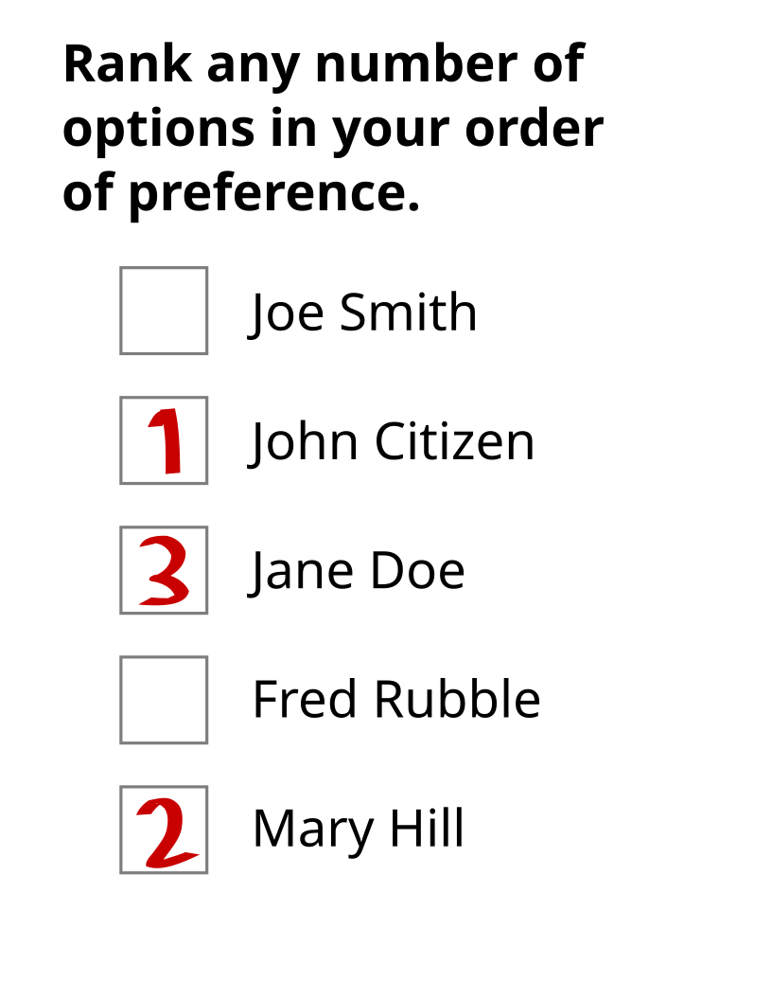

Arrow's impossibility theorem (1951) proves that no ranked voting system with three or more candidates can simultaneously satisfy four reasonable fairness criteria. Every system that handles unrestricted preferences and respects unanimity must either depend on irrelevant alternatives or concentrate all power in a single voter. This project lets you verify that claim yourself by running five real voting algorithms against all four criteria and watching each one fail.

{kind=link}
The four criteria
A social welfare function \(f\) takes a preference profile (a list of voter rankings over candidates) and produces a single social ranking. Arrow's theorem requires four properties:
Unrestricted domain. \(f\) must accept any possible preference profile. No voter's ranking is forbidden.
Pareto optimality. If every voter ranks \(A\) above \(B\), the social ranking must also place \(A\) above \(B\). Unanimous preference is respected.
Independence of irrelevant alternatives (IIA). The social ranking of \(A\) versus \(B\) depends only on voters' pairwise preferences between \(A\) and \(B\). Introducing or removing a third candidate \(C\) cannot change whether the group prefers \(A\) to \(B\).
Non-dictatorship. There is no voter \(i\) such that the social ranking always equals voter \(i\)'s ranking, regardless of everyone else's preferences.
Arrow's theorem states that for \(|\text{candidates}| \geq 3\), no \(f\) satisfies all four. The app proves this empirically by exhaustively checking each criterion against each voting method.
Five voting methods
Plurality counts first-place votes. The candidate who is ranked first by the most voters wins. Simple, but notoriously vulnerable to vote splitting: it violates IIA because adding a similar candidate can siphon first-place votes from a frontrunner.
Borda count assigns positional scores. With \(m\) candidates, a candidate ranked at position \(i\) (0-indexed) on a ballot receives \(m - 1 - i\) points. The total score for candidate \(c\) across all ballots is:
\[\text{score}(c) = \sum_{j=1}^{n} (m - 1 - \text{pos}_j(c))\]Borda satisfies Pareto optimality but fails IIA: the relative score between two candidates changes when a third candidate's position shifts on some ballots.
Instant runoff (IRV) iteratively eliminates the candidate with the fewest first-place votes and redistributes their ballots to the next surviving choice. A candidate wins immediately upon receiving more than half the votes. IRV satisfies non-dictatorship and unrestricted domain but fails both IIA and, in some edge cases, Pareto optimality.
Condorcet builds a pairwise comparison matrix: for each pair \((A, B)\), count how many voters rank \(A\) above \(B\). A candidate who wins every pairwise matchup is the Condorcet winner. Candidates are ranked by total pairwise wins. The method satisfies IIA on the pairs it can resolve, but Condorcet cycles (\(A > B > C > A\)) can make it impossible to produce a consistent ranking, violating unrestricted domain.
Approval lets each voter approve their top \(\lceil m/2 \rceil\) candidates. The candidate with the most approvals wins. Approval voting sidesteps Arrow's theorem somewhat because it doesn't use strict rankings as input, but the app maps ranked preferences to approval ballots to compare it on equal footing.
Checking criteria by enumeration
With 3 candidates and 3 voters, each voter can submit one of \(3! = 6\) possible rankings. The total number of distinct preference profiles is \(6^3 = 216\). This is small enough to enumerate exhaustively, and the app does exactly that for each criterion check.
The IIA checker, for instance, iterates over all pairs of profiles that agree on the pairwise ordering of candidates \(A\) and \(B\) for every voter, then verifies that the social ranking of \(A\) versus \(B\) is consistent across both profiles. If the social welfare function ranks \(A > B\) under one profile but \(B > A\) under another, despite identical pairwise voter preferences between \(A\) and \(B\), IIA is violated and the checker returns both profiles as a counterexample.
For more than 3 candidates the profile space explodes (\(4!^3 = 13{,}824\); \(5!^3 = 1{,}728{,}000\)), so the checkers switch to random sampling (200-300 profiles depending on the criterion). This means a "satisfied" result for 4+ candidates is probabilistic, not exhaustive, but in practice the violations surface quickly.